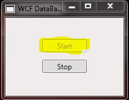
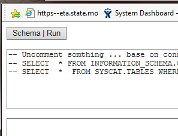

WCF how to host and use data service (access service). Data.Common. DataCommon.
Introduction
For example, you need to have an access from Mainframe to any different DataBase.
Just run WPF which hosts universal access to any database (DataCommon).
Replace computer name with your computer name (both project) and run...
You can use this sample as a template for build your application.
WPF VB.net host web service which was consuming by the web application.
Open Solution - both projects are starting project

Select [start] on windows application ... make sure you

On web page add your SQL code and RUN. (Or you can RUN schema SQL for MS SQL or DB2)

Imports System Imports System.ServiceModel Imports System.Runtime.Serialization Imports System.Runtime.InteropServices Imports System.Data Imports System.Text Imports WCFhostVBnet.DataCommon Imports WCFhostVBnet 'See this links 'https://msdn.microsoft.com/en-us/library/ms733811(v=vs.110).aspx 'https://msdn.microsoft.com/en-us/library/ms733127(v=vs.110).aspx?cs-save-lang=1&cs-lang=vb#code-snippet-1 'https://msdn.microsoft.com/en-us/library/system.runtime.serialization.datacontractattribute(v=vs.110).aspx <DataContract()> Public Class SqlDataIn <DataMember()> Public SqlText As String = "" <DataMember()> Public SqlType As String = "" ' "Proc" or ("Text" or "") (default "Text") <DataMember()> Public SqlParam As Dictionary(Of String, Object) = Nothing ' Add here additional DataMember End Class <DataContract()> Public Class SqlDataOut <DataMember()> Public DataSetOut As DataSet = Nothing <DataMember()> Public strError As String = "" <DataMember()> Public intOut As Integer = 0 ' Add here additional DataMember End Class <ServiceContract()> Public Interface ISqlServiceContract <OperationContract()> Function GetDataSet(ByVal root As SqlDataIn) As SqlDataOut <OperationContract()> Function ExecuteSqlNonQuery(ByVal root As SqlDataIn) As SqlDataOut <OperationContract()> Function ServiceOK() As String ' Add here additional OperationContract End Interface Public Class SqlServiceContract Implements ISqlServiceContract ''' <summary> ''' ExecuteSqlNonQuery - input SqlCommand, Command Type, Dictionary ''' You MUST use DataContract for In/Out data ''' </summary> ''' <param name="root"></param> ''' <returns></returns> Public Function ExecuteSqlNonQuery(root As SqlDataIn) As SqlDataOut Implements ISqlServiceContract.ExecuteSqlNonQuery Dim strError As String = "" Dim sqlData As SqlDataOut = New SqlDataOut Dim dc As DataCommon = New DataCommon() Dim com As Common.DbCommand = dc.commandDB com.CommandText = root.SqlText Dim ct As CommandType = IIf(root.SqlType.ToUpper = "PROC", CommandType.StoredProcedure, CommandType.Text) Dim intOut As Integer = dc.ExecuteSqlNonQuery(com, ct, root.SqlParam, strError) sqlData.intOut = intOut sqlData.DataSetOut = Nothing sqlData.strError = strError Return sqlData End Function ''' <summary> ''' Get Data Set - input SqlCommand, Command Type, Dictionary ''' You MUST use DataContract for In/Out data ''' </summary> ''' <param name="root"></param> ''' <returns></returns> Public Function GetDataSet(root As SqlDataIn) As SqlDataOut Implements ISqlServiceContract.GetDataSet Dim strError As String = "" Dim sqlData As SqlDataOut = New SqlDataOut Dim dc As DataCommon = New DataCommon() Dim com As Common.DbCommand = dc.commandDB com.CommandText = root.SqlText Dim ct As CommandType = IIf(root.SqlType.ToUpper() = "PROC", CommandType.StoredProcedure, CommandType.Text) Dim ds As DataSet = dc.GetDataSet(com, ct, root.SqlParam, strError) sqlData.intOut = 0 sqlData.DataSetOut = ds sqlData.strError = strError Return sqlData End Function ''' <summary> ''' ServiceOk for test Service itself - must return always OK ''' </summary> ''' <returns></returns> Public Function ServiceOK() As String Implements ISqlServiceContract.ServiceOK Return "OK" End Function End Class
Imports System Imports System.ServiceModel Imports System.Runtime.Serialization Imports System.Runtime.InteropServices Imports System.Data Imports System.Text Imports WCFhostVBnet.DataCommon Imports WCFhostVBnet 'See this links 'https://msdn.microsoft.com/en-us/library/ms733811(v=vs.110).aspx 'https://msdn.microsoft.com/en-us/library/ms733127(v=vs.110).aspx?cs-save-lang=1&cs-lang=vb#code-snippet-1 'https://msdn.microsoft.com/en-us/library/system.runtime.serialization.datacontractattribute(v=vs.110).aspx <DataContract()> Public Class SqlDataIn <DataMember()> Public SqlText As String = "" <DataMember()> Public SqlType As String = "" ' "Proc" or ("Text" or "") (default "Text") <DataMember()> Public SqlParam As Dictionary(Of String, Object) = Nothing ' Add here additional DataMember End Class <DataContract()> Public Class SqlDataOut <DataMember()> Public DataSetOut As DataSet = Nothing <DataMember()> Public strError As String = "" <DataMember()> Public intOut As Integer = 0 ' Add here additional DataMember End Class <ServiceContract()> Public Interface ISqlServiceContract <OperationContract()> Function GetDataSet(ByVal root As SqlDataIn) As SqlDataOut <OperationContract()> Function ExecuteSqlNonQuery(ByVal root As SqlDataIn) As SqlDataOut <OperationContract()> Function ServiceOK() As String ' Add here additional OperationContract End Interface Public Class SqlServiceContract Implements ISqlServiceContract ''' <summary> ''' ExecuteSqlNonQuery - input SqlCommand, Command Type, Dictionary ''' You MUST use DataContract for In/Out data ''' </summary> ''' <param name="root"></param> ''' <returns></returns> Public Function ExecuteSqlNonQuery(root As SqlDataIn) As SqlDataOut Implements ISqlServiceContract.ExecuteSqlNonQuery Dim strError As String = "" Dim sqlData As SqlDataOut = New SqlDataOut Dim dc As DataCommon = New DataCommon() Dim com As Common.DbCommand = dc.commandDB com.CommandText = root.SqlText Dim ct As CommandType = IIf(root.SqlType.ToUpper = "PROC", CommandType.StoredProcedure, CommandType.Text) Dim intOut As Integer = dc.ExecuteSqlNonQuery(com, ct, root.SqlParam, strError) sqlData.intOut = intOut sqlData.DataSetOut = Nothing sqlData.strError = strError Return sqlData End Function ''' <summary> ''' Get Data Set - input SqlCommand, Command Type, Dictionary ''' You MUST use DataContract for In/Out data ''' </summary> ''' <param name="root"></param> ''' <returns></returns> Public Function GetDataSet(root As SqlDataIn) As SqlDataOut Implements ISqlServiceContract.GetDataSet Dim strError As String = "" Dim sqlData As SqlDataOut = New SqlDataOut Dim dc As DataCommon = New DataCommon() Dim com As Common.DbCommand = dc.commandDB com.CommandText = root.SqlText Dim ct As CommandType = IIf(root.SqlType.ToUpper() = "PROC", CommandType.StoredProcedure, CommandType.Text) Dim ds As DataSet = dc.GetDataSet(com, ct, root.SqlParam, strError) sqlData.intOut = 0 sqlData.DataSetOut = ds sqlData.strError = strError Return sqlData End Function ''' <summary> ''' ServiceOk for test Service itself - must return always OK ''' </summary> ''' <returns></returns> Public Function ServiceOK() As String Implements ISqlServiceContract.ServiceOK Return "OK" End Function End Class
To create a basic data contract for a class or structure
1.Declare that the type has a data contract by applying the DataContractAttribute attribute to the class. Note that all public types, including those without attributes, are serializable. The DataContractSerializer infers a data contract if the DataContractAttribute attribute is absent. For more information, see, see Serializable Types.
2.Define the members (properties, fields, or events) that are serialized by applying the DataMemberAttribute attribute to each member. These members are called data members. By default, all public types are serializable. For more information, see, see Serializable Types.
More Information
https://msdn.microsoft.com/en-us/library/ms733811(v=vs.110).aspx
https://msdn.microsoft.com/en-us/library/ms733127(v=vs.110).aspx?cs-save-lang=1&cs-lang=vb#code-snippet-1
https://msdn.microsoft.com/en-us/library/system.runtime.serialization.datacontractattribute(v=vs.110).aspx